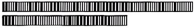
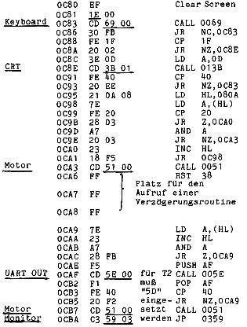

Nascom Journal |
August 1981 · Ausgabe 8 |
Mir fielen nur einige durch Zufall in die Hände. An Hardware interessiert mich: A/D-D/A-Wandler (schnell), EPROM-Programmer (der für 185,–DM ist doch wohl leicht überteuert und scheint auch nicht vernünftig zu arbeiten). Werden solche Geräte nicht vorgestellt, damit der eigene Schrott verkauft werden kannn?
Zum Thema Strichcode: Das ist eine interessante Spielerei, aber ich glaube nicht, daß die Druckqualität des Journals eine gute Arbeitsweise des Code-Lesers erwarten läßt. Das Leseprogramm für 88,–DM soll ja wohl ein Witz sein. In der MC gibt’s sowas umsonst. Man sollte nicht für einfache Programme horrende Preise fordern und dann erwarten, daß die Leser Programme zum Nulltarif einschicken. Fazit: kein Strichcode!
Das letzte Heft (6/81) war o.k. Wenn’s so weiter geht, bin ich zufrieden.
Reinhard Zickwolff, Hannover
Antwort der Redaktion:
1. Die INMC News haben auch uns gut gefallen, und wir versuchten, einiges davon zu übernehmen. Diese Zeitschrift existiert aber nicht mehr
2. Die Redaktion ist in ihrer Meinung völlig unabhängig von MK Systemtechnik und hat kein Interesse, irgendwelchen „Schrott“ zu verkaufen. Wenn wir Programme oder Geräte vorstellen, dann deshalb, weil einige Leser daran interessiert sind.
3. Ein schneller AD/DA Wandler wird gerade von Herrn Peter Bentz entwickelt. Er hat vor einiger Zeit im Journal das ausgezeichnete Plotterprogramm vorgestellt, und wir sind gespannt, wie seine Wandlerplatine aussieht. (Sie lassen doch bald von sich hören, Herr Bentz?)
4. Strichcode: Seit wir das neue Papier benutzen, ist die Druckqualität wesentlich besser. Wenn wir den Strichcode plotten,wird die Lesefähigkeit weit größer als im MC (wurde getestet). Der Eigenbau-Plotter (er wird demnächst vorgestellt) braucht nur noch eine bessere Führung des Tuscheschreibers, dann können wir gut lesbare Strichcodelistings auf Sie loslassen. Hier als Vorgeschmack ein Muster. (übrigens im MC-Format!)
5. Das Srichcodeprogramm, das im Mai-Heft angeboten wurde, ist speziell für MK Systemtechnik entwickelt worden. Manche Leute leben nun einmal vom Verkauf von Software, und die wird dann eben teuer. Andere machen das als Hobby nebenher (wie z.B. die Redaktion und viele Leser) und wollen nicht jedes Ergebnis zu barer Münze machen. Daß eine Zeitschrift wie MC es sich leisten kann, Programme entwickeln zu lassen, um sie zu veröffentlichen, ist bei einer Auflage von 60 000 und einer Unmenge von Werbung nicht verwunderlich. Wir hingegen (unsere Auflage traue ich mir nicht bekanntzugeben) sind auf gegenseitigen Austausch der Programme unserer Leser angewiesen. Deshalb können wir es uns auch nicht leisten, „Profi-Artikel“ zu veröffentlichen. Die Druckkosten liegen höher als die Abonnement-Einnahmen. MKS schießt den Rest zu. (zum Glück!)
Dieses Miniprogramm läßt nach Start bei 0C80 den Bildschirm vollschreiben. NEW LINE wird als 0D abgebildet. Durch Drücken von @ wird der Textanfang gesucht und der ganze Text bis @ über UART ausgegeben. Dann springt das Programm in den Monitor. Anstelle des Cassettenrecorders könnte auch ein Drucker angeschlossen werden. (Das wäre mit den Editiermöglichkeiten von Nassys interessant.)

| Seite 17 von 24 |
|---|